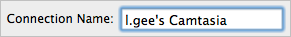
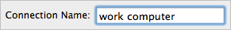

Change the TechSmith Fuse Connection Name
Change the TechSmith Fuse Connection Name
The Connection Name indicates which instance of Camtasia you are sending media files to from Fuse. By default, the Connection Name is your computer login name followed by Camtasia.

A unique Connection Name can be created to differentiate between computers.
